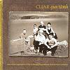

Celtic Lyrics Corner > Artists & Groups > Cliar > Gun Tàmh > Nighean Donn A' Chuailein Rìomhaich
|  | Nighean Donn A' Chuailein Rìomhaich |
| Credits : | Traditional; arranged by Cliar |
| Appears On : | Gun Tàmh |
| Language : | Gàidhlig (Scottish Gaelic) |
| Lyrics : | English Translation : |
| Sèist : | Chorus (after each verse) : |
| Nighean donn a' chuailein rìomhaich | Brown-haired girl of the beautiful tresses |
| B' àlainn, uasal, buaidh do shinnsir | Lovely, noble, triumph of your ancestry |
| Nighean donn a' chuailein rìomhaich | Brown-haired girl of the beautiful tresses |
| Ghràdhaich mi do leannanachd | I enjoy your courtship |
| 'S ann a' fuireach thall 's na cluaintean | Living yonder in the pastures |
| Tha nigh'n bhàn a rinn mo bhuaireadh | Is the fair girl who has tempted me |
| Mach o ùr fhuil ghlan gun truailleadh | Descended from flesh, fine, undefiled blood |
| Sìol nam buadh 's na lannaireachd | From talented, radiant stock |
| An àm don bharrach a bhith brùchdadh | When the top branches are bursting forth |
| Bhiodh na smeòraichean a' dùsgadh | The thrushes would be wakening |
| Air bhàrr gheugan a' seinn ciùil | On the ends of the branches, singing their songs |
| 'S a' togail cliù mo leannain-sa | About my love's renown |
| Thug mi cion 's chan fhaod mi àicheadh | I gave my love and I cannot deny it |
| Do nigh'n duinn a' chuailein àlainn | To the brown-haired girl of the lovely curls |
| 'S mòr gum b' fheàrr bhith suidhe làmh rith' | I would rather sit beside her |
| Na fìon Spàinnd' is caineal ann | Than have Spanish wine with cinnamon |